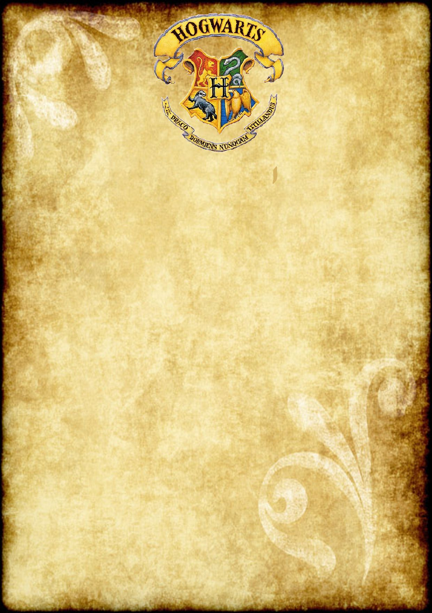

<div class="letterMain">
<div id="carouselExampleControls" class="carousel slide" data-ride="carousel">
    <div class="carousel-inner">
      <div class="carousel-item active">
        <div class="container letterMain" >
            
            <div class="letterDesc">
                <h3>Dear User</h3>
                <h4>Welcome to Hogwards</h4>
                <p>We are pleased to inform you that you have been accepted at Hogwarts School of Witchcraft and Wizardry. Please find enclosed a list of all necessary books and equipment. Term begins on September 1. We await your owl by no later than July 31.</p>
                <p>UNIFORM First-year students will require: 1.Three sets of plain work robes (black) 2.One plain pointed hat (black) for day wear 3.One pair of protective gloves (dragon hide or similar) 4.One winter cloak (black, with silver fastenings) Please note that all pupil's clothes should carry name tags.</p>
                <p>COURSE BOOKS All students should have a copy of each of the following:</p>
                <ul>
                    <li>The Standard Book of Spells (Grade 1) by Miranda Goshawk</li>
                    <li>A History of Magic by Bathilda Bagshot</li>
                    <li>Magical Theory by Adalbert Waffling</li>
                </ul>
            </div>
        </div>
      </div>
      <div class="carousel-item">
        <div class="container letterMain" >
            
            <div class="letterDesc">
                <ul>
                    <li>One Thousand Magical Herbs and Fungi by Phyllida Spore</li>
                    <li>Magical Drafts and Potions by Arsenius Jigger</li>
                    <li>Fantastic Beasts and Where to Find Them by Newt Scamander</li>
                    <li>The Dark Forces: A Guide to Self-Protection by Quentin Trimble</li>
                </ul>
                <p>OTHER EQUIPMENT</p>
                <ul>
                    <li>1 wand</li>
                    <li>1 cauldron (pewter, standard size 2)</li>
                    <li>1 set glass or crystal phials</li>
                    <li>1 telescope</li>
                    <li>1 set brass scales</li>
                    <li>Students may also bring an owl OR a cat OR a toad.</li>
                </ul>
                <p>Headmaster: Albus Dumbledore (Order of Merlin, First Class, Grand Sorc., Chf. Warlock, Supreme Mugwump, International Confed. of Wizards)</p>
            </div>
        </div>
      </div>
    </div>
    <a class="carousel-control-prev  " href="#carouselExampleControls" role="button" data-slide="prev">
      <span class="carousel-control-prev-icon" aria-hidden="true"></span>
      <span class="sr-only">Previous</span>
    </a>
    <a class="carousel-control-next  " href="#carouselExampleControls" role="button" data-slide="next">
      <span class="carousel-control-next-icon" aria-hidden="true"></span>
      <span class="sr-only">Next</span>
    </a>
  </div>
</div>